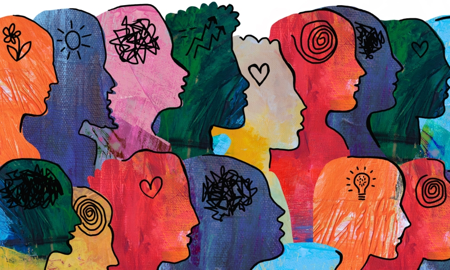

Ментално здравље
Ментално здравље је подједнако важно као и физичко здравље. Добро ментално стање помаже у суочавању са стресом и изазовима живота, а позитиван став доприноси укупном здрављу. Овде ћете наћи савете за развијање здравих менталних навика.
- Практикујте опуштање: медитација, дубоко дисање
- Одвојите време за активности које волите
- Дружите се са пријатељима и породицом
- Поставите реалне циљеве и очекивања
Квалитетан сан

Квалитетан сан је неопходан за обнову енергије и опоравак организма. Одговарајућа количина и квалитет сна позитивно утичу на концентрацију, продуктивност и опште здравље.
- Идите на спавање и будите се у исто време сваког дана
- Избегавајте коришћење електронских уређаја пред спавање
- Направите пријатну атмосферу у спаваћој соби
- Избегавајте тешке оброке и кофеин у вечерњим сатима